45+ Mẫu Tờ Rơi Karaoke, Quán Hát Đẹp, Độc Đáo & Bắt Mắt
Chất liệu: Giấy Couche
Độ dày: 100GSM-300GSM
Kích thước: A3, A4, A5, A6
Màu sắc: Chuẩn file thiết kế
Công nghệ in: Offset & Kỹ thuật số
Thời gian in: Từ 1-2 ngày
Số lượng: Không giới hạn
Tổng quan
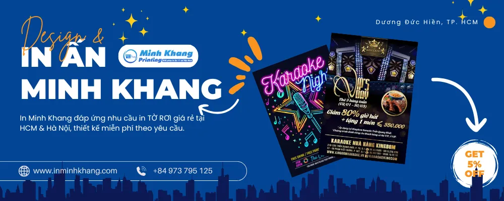
Mục lục
- Tại Sao Tờ Rơi Karaoke Lại Quan Trọng?
- Các Yếu Tố Tạo Nên Một Tờ Rơi Karaoke Thu Hút
- 45+ Mẫu Tờ Rơi Karaoke Đẹp, Độc & Lạ 3.1. Phong Cách Hiện Đại Sang Trọng & Tinh Tế 3.2. Phong Cách Cổ Điển Hoài Niệm & Ấm Cúng 3.3. Phong Cách Trẻ Trung Năng Động & Vui Nhộn 3.4. Chủ Đề Đặc Biệt Lễ Hội & Sự Kiện 3.5. Khuyến Mãi Tăng Doanh Số
- Bí Quyết Tối Ưu Hiệu Quả Tờ Rơi Karaoke
- Dịch Vụ In Tờ Rơi Karaoke Giá Rẻ Tại TP.HCM & Hà Nội
Tại Sao Tờ Rơi Karaoke Lại Quan Trọng?
Dù công nghệ phát triển, tờ rơi vẫn là công cụ quảng cáo karaoke hiệu quả vì:
- Tiếp cận trực tiếp: Tờ rơi dễ dàng phát tại các địa điểm đông người (trung tâm thương mại, khu vui chơi), đưa thông tin quán karaoke đến thẳng khách hàng tiềm năng.
- Nhận diện thương hiệu: Thiết kế độc đáo (logo, màu sắc, hình ảnh) giúp khách hàng ghi nhớ quán karaoke của bạn.
- Quảng bá khuyến mãi, sự kiện: Tờ rơi thông báo nhanh các chương trình ưu đãi, sự kiện đặc biệt, thu hút khách hàng.
- Tạo ấn tượng chuyên nghiệp: Tờ rơi thiết kế đẹp thể hiện sự đầu tư, tạo niềm tin về chất lượng dịch vụ của quán.
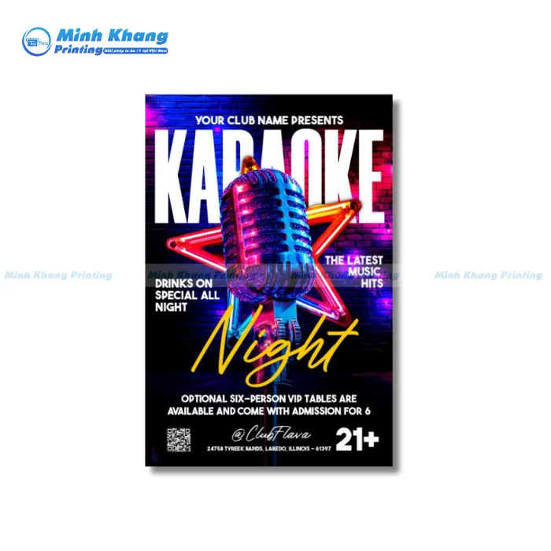
Mẫu Tờ Rơi Karaoke Nổi Bật & Sôi Động
Các Yếu Tố Tạo Nên Một Tờ Rơi Karaoke Thu Hút
Để thu hút khách hàng, tờ rơi karaoke cần:
Thiết kế độc đáo:
- Màu sắc: Hài hòa, nổi bật, hợp phong cách quán.
- Hình ảnh: Chất lượng cao, thể hiện không khí sôi động.
- Bố cục: Rõ ràng, dễ đọc.
Nội dung súc tích, đầy đủ: Tên quán, địa chỉ, điện thoại, giờ mở cửa, dịch vụ, khuyến mãi (nếu có, cần làm nổi bật).
Chất liệu giấy (quan trọng):
-
Giấy Couche: Phổ biến nhất, bề mặt bóng/mờ & in ấn đẹp. Định lượng 150gsm – 300gsm (độ dày, độ bền). -
Giấy Bristol: Đây là dòng giấy cao cấp hơn. Mịn, ít bóng, dày & cứng hơn Couche (200gsm – 280gsm).
Kích thước:
- A4 (21cm x 29.7cm): Nội dung chi tiết.
- A5 (14.8cm x 21cm): Nhỏ gọn, dễ phát.
- DL (10cm x 21cm): Thon dài, hiện đại.
- Tùy chỉnh: Kích thước sáng tạo, khác biệt.
Công nghệ in:
- In Offset: Màu sắc sống động, hình ảnh sắc nét, in số lượng lớn & in được trên nhiều chất liệu (giấy, bìa cứng, nhựa mỏng…)
- In Kỹ Thuật Số: In nhanh, phù hợp in số lượng ít
Gia công (tùy chọn): Cán màng, ép nhũ & hiệu ứng 3D (tăng thẩm mỹ, độ bền).
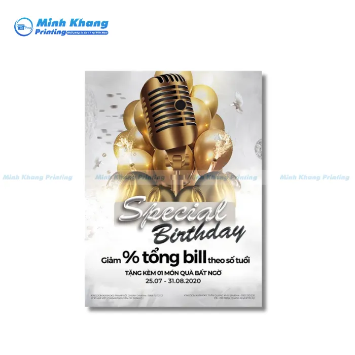
Mẫu Tờ Rơi Quảng Cáo Karaoke
45+ Mẫu Tờ Rơi Karaoke Đẹp, Độc & Lạ
Tờ rơi là công cụ quảng cáo trực tiếp, hiệu quả cho ngành karaoke. Một tờ rơi ấn tượng không chỉ cung cấp thông tin mà còn tạo dấu ấn thương hiệu. Bài viết này gợi ý các mẫu tờ rơi đa dạng, phù hợp với nhiều chiến lược quảng bá.
Phong Cách Hiện Đại Sang Trọng & Tinh Tế
Dành cho quán karaoke cao cấp, thu hút khách hàng yêu thích sự đẳng cấp.
- Màu sắc: Trung tính (trắng, đen, xanh navy, ánh kim).
- Hình ảnh: Nội thất sang trọng, đèn LED.
- Bố cục: Tối giản, tập trung: địa chỉ, khuyến mãi.
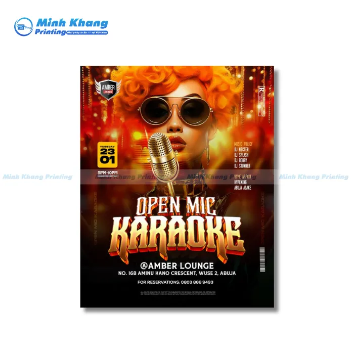
Mẫu Tờ Rơi Karaoke Phong Cách & Ấn Tượng
Phong Cách Cổ Điển Hoài Niệm & Ấm Cúng
Lý tưởng cho không gian karaoke mang hơi hướng hoài cổ.
- Họa tiết: Vintage, hoa văn, đường viền nghệ thuật.
- Màu sắc: Ấm áp (nâu, đỏ đô, vàng đất).
- Phông chữ: Serif, chữ viết tay truyền thống.
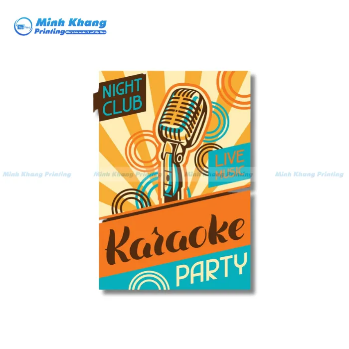
Mẫu Tờ Rơi Mang Phong Cách Vintage Cho Các Quán Karaoke
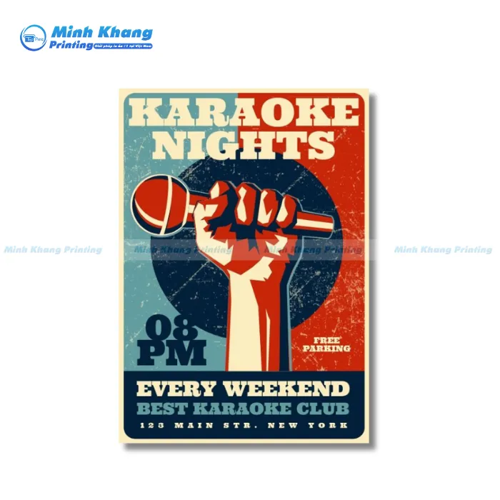
Mẫu Tờ Rơi Karaoke Mang Phong Cách Thập Niên 90s
Phong Cách Trẻ Trung Năng Động & Vui Nhộn
Thu hút giới trẻ bằng sự năng động, vui tươi.
- Màu sắc: Neon, rực rỡ (xanh lá, hồng, tím).
- Hình ảnh: Nhóm bạn trẻ, micro, loa.
- Bố cục: Phá cách, sáng tạo.
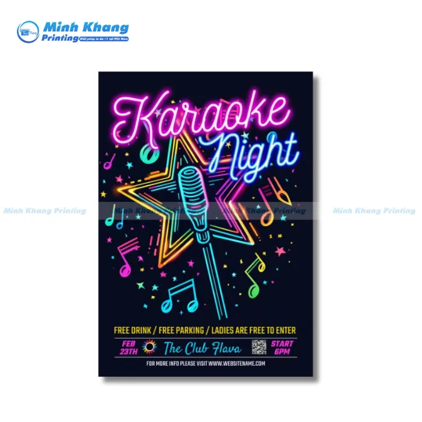
Mẫu Tờ Rơi Karaoke Với Hiệu Ứng Đèn Neon
Chủ Đề Đặc Biệt Lễ Hội & Sự Kiện
Tận dụng các dịp lễ, sự kiện để quảng bá.
- Sinh nhật: Ưu đãi, hình ảnh bánh kem, bóng bay.
- Lễ hội (Giáng Sinh, Tết, Halloween): Thiết kế theo chủ đề.
- Sự kiện âm nhạc: Hình ảnh DJ, sân khấu, ca sĩ.
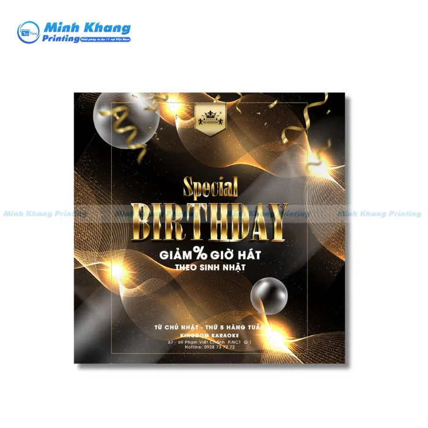
Mẫu Tờ Rơi Quảng Cáo Karaoke Nhân Dịp Sinh Nhật
Khuyến Mãi Tăng Doanh Số
Quảng cáo chương trình khuyến mãi để thu hút khách.
- Nội dung: Giảm giá giờ vàng, miễn phí dịch vụ, tặng quà.
- Hình ảnh: Micro, loa, không gian quán.
- Kêu gọi hành động (Call-to-action): Liên hệ, đặt phòng.
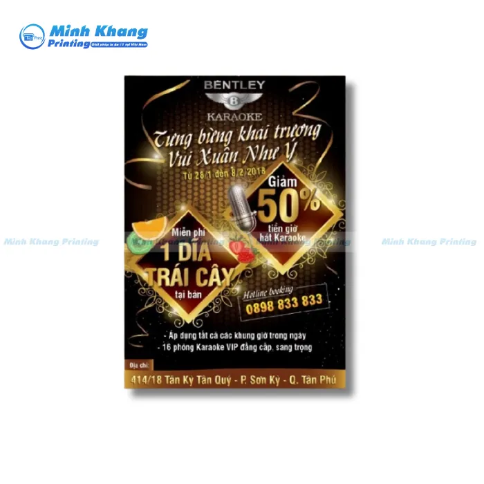
Mẫu Tờ Rơi Quảng Cáo Karaoke Chương Giảm Giá & Tặng Kèm
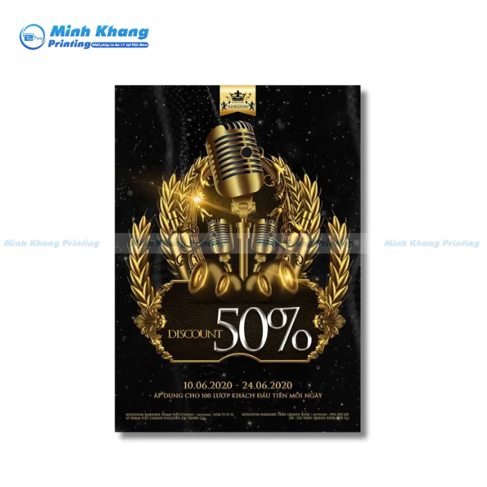
Mẫu Tờ Rơi Giảm Giá Giờ Hát Karaoke
Bí Quyết Tối Ưu Hiệu Quả Tờ Rơi Karaoke
Tờ rơi vẫn là công cụ quảng cáo hiệu quả nhờ tính linh hoạt và khả năng tiếp cận trực tiếp. Để tối ưu hiệu quả, cần lưu ý các yếu tố sau:
Xác Định Mục Tiêu
Trước khi thiết kế, hãy làm rõ mục tiêu:
- Quảng bá thương hiệu: Giới thiệu doanh nghiệp, sản phẩm/dịch vụ.
- Khuyến mãi: Thông báo giảm giá, ưu đãi.
- Sự kiện: Thông tin chi tiết (khai trương, hội nghị…).
Thông Điệp Rõ Ràng
Tờ rơi cần truyền tải thông điệp súc tích:
- Tiêu đề: Gây ấn tượng mạnh.
- Nội dung: Ngắn gọn, đầy đủ, dễ hiểu.
- Kêu gọi hành động (Call-to-action - CTA): Gọi điện, truy cập web, đến cửa hàng.
Hình Ảnh Chất Lượng
Hình ảnh tạo sức hút thị giác:
- Độ phân giải cao: Sắc nét, chuyên nghiệp.
- Liên quan: Phản ánh sản phẩm/dịch vụ.
- Bố cục: Hài hòa, không lấn át chữ.
Hình ảnh kém chất lượng làm giảm giá trị tờ rơi.
Phân Phối Đúng Đối Tượng, Đúng Địa Điểm
- Đối tượng mục tiêu: Phân tích khách hàng (độ tuổi, sở thích…).
- Địa điểm: Nơi đông người, liên quan (trung tâm thương mại, khu dân cư, sự kiện).
- Thời gian: Thời điểm khách hàng dễ tiếp nhận.
- Phân tích khách hàng mục tiêu: Độ tuổi; Giới tính; Khu vực & Thu nhập
Mã QR Code: Kết Nối Nhanh
Mã QR tăng tính tương tác:
- Liên kết: Đến trang web, mạng xã hội, video, phiếu giảm giá.
- Tiện lợi: Phù hợp khách hàng trẻ.
- Vị trí: Dễ thấy trên tờ rơi.
Mã QR Code
- Thông tin liên hệ
- Thông tin khuyến mãi
- Thông tin về các loại phòng
- Các loại đồ ăn, thức uống.
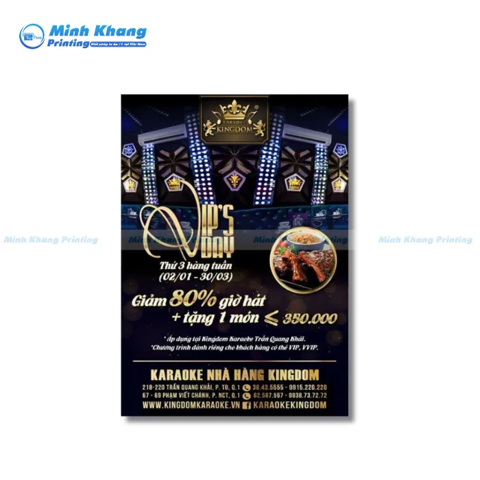
Mẫu Tờ Rơi Karaoke Sang Trọng
Dịch Vụ In Tờ Rơi Karaoke Giá Rẻ Tại TP.HCM & Hà Nội
Bạn đang cần tìm nơi in tờ rơi karaoke giá rẻ, uy tín tại TP.HCM hoặc Hà Nội? Thì Công Ty In Minh Khang là giải pháp cho bạn.
Tại sao chọn in ấn chuyên nghiệp?
- Hình ảnh sắc nét: Tờ rơi đẹp, đúng màu thu hút khách hàng.
- Hoàn thành nhanh: Đảm bảo tiến độ cho sự kiện, khuyến mãi.
- Giá hợp lý: Chất lượng tốt, không đắt đỏ. Minh Khang tiết kiệm chi phí cho bạn.
In Minh Khang - Giải Pháp In Ấn Tối Ưu
Minh Khang, với kinh nghiệm lâu năm trong ngành in ấn & được nhiều đối tác khách hàng tin tưởng lựa chọn tại TP.HCM và Hà Nội, là địa chỉ
- Thiết kế đa dạng: Hiện thực hóa mọi ý tưởng.
- Giấy chất lượng cao: Tạo sự chuyên nghiệp.
- Giá cạnh tranh: Tốt nhất thị trường.
- Hỗ trợ tận tâm: Từ ý tưởng đến in ấn.
Hãy liên hệ với chúng tôi ngay để được tư vấn và báo giá miễn phí. Chúng tôi giúp bạn thực hiện hóa các ý tưởng tờ rơi
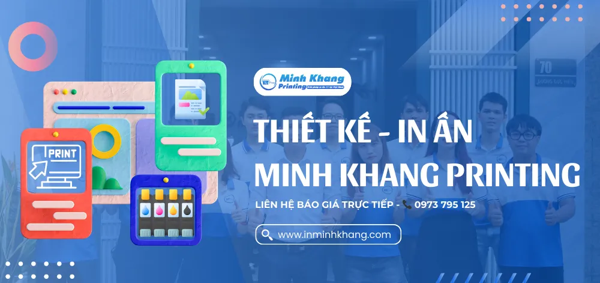
Những mẫu tờ rơi karaoke đẹp, độc, và lạ không chỉ là công cụ quảng bá thông thường, mà còn thể hiện phong cách và cá tính riêng của quán hát. Hy vọng rằng bài viết này đã giúp bạn tìm thấy nguồn cảm hứng cho thiết kế tờ rơi của mình. Hãy đầu tư vào sự sáng tạo để thu hút khách hàng một cách hiệu quả nhất. Nếu bạn cần hỗ trợ thiết kế hoặc in ấn, đừng ngần ngại liên hệ với In Minh Khang qua